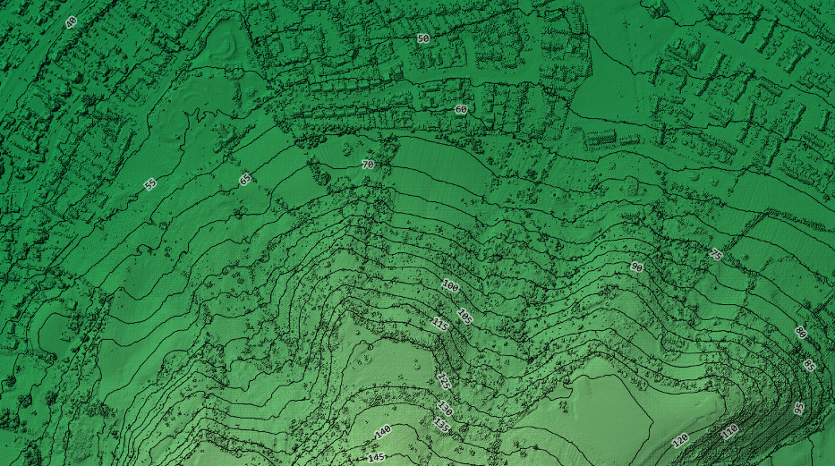
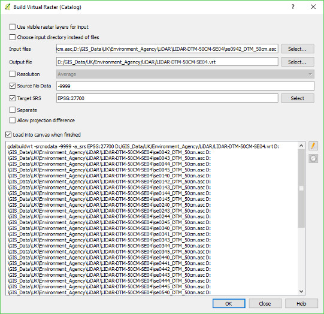
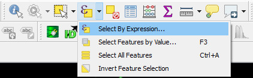
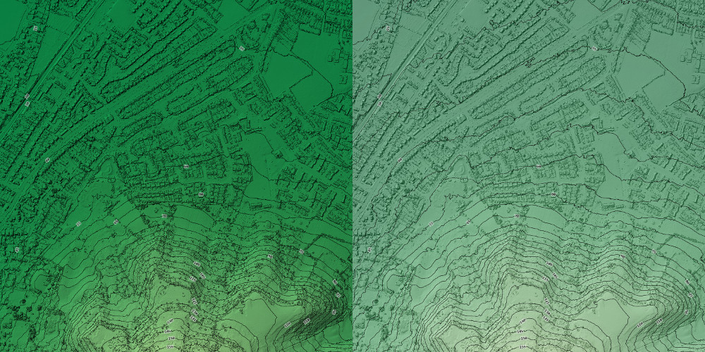
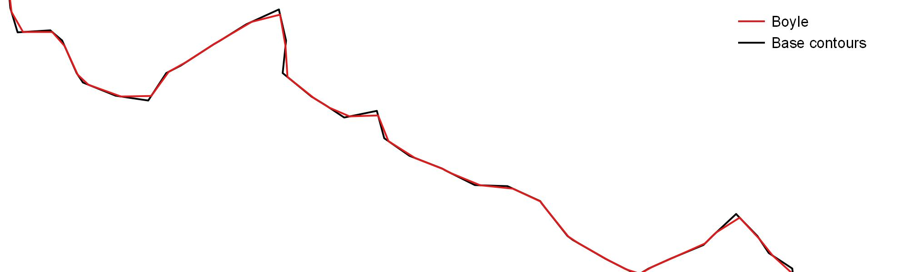
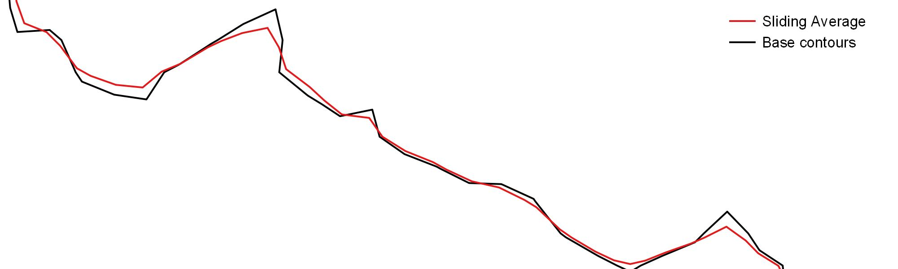
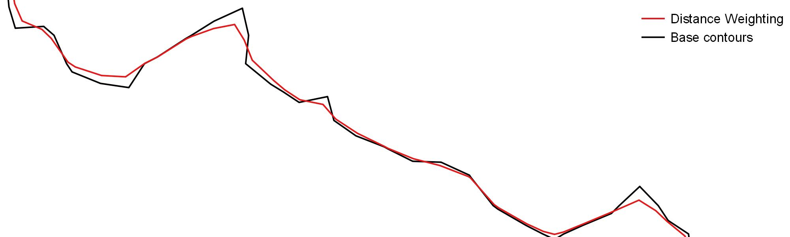
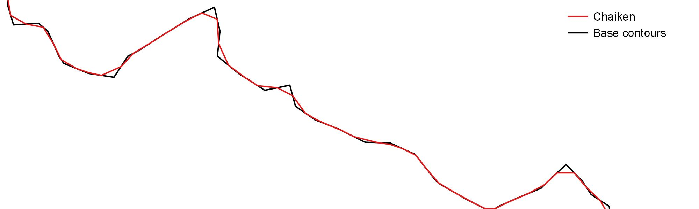
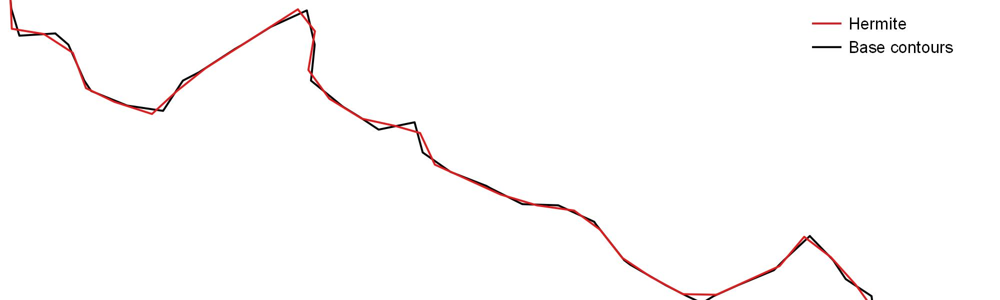

2017/08/19

Most sources of LiDAR data I've seen (and raster data in general) comes split into tiles for a number of reasons. This does causes us a few problems when using the data:
There's a few ways to solve this, but the simplest I know of is to build a virtual raster / raster catalog. This is basically a small file that acts as an intermediate and allows a set of tiles to be treated as a single file. It can do a couple of fairly clever things with different resolutions and projections - but for the simple purpose of merging LiDAR tiles we don't need that.
The processing steps to create a virtual raster are:

From this image, you can see an example. The big box full of file paths is a bit of a giveaway to what's actually happening here. One of the major open-source components of QGIS is GDAL, which handles the bult of raster processing. In this example, QGIS is acting as an intermediary between the user and gdalbuildvrt which actually builds the virtual raster.
As an example I'll assume the desired output is a hillshade (aka shaded relief) with height themed by colour and contours over the top.
The simplest of these is elevation themed by height. The previous step should have loaded the data into QGIS (if it hasn't you should be able to load it through the 'Add Raster Layer' menu), so go into the layer properties for the LiDAR data:
Hillshading is very simple in newer versions of QGIS.
In older versions, there's an option to create hillshades using the 'Raster Terrain Analysis Plugin' which may need to be installed if it's not already in the 'Raster' menu.
A note of caution for calculating hillshades on the fly - it re-calculates itself dynamically, so if you're planning to view the data up-close you're better off pre-calculating it through the Terrain Analysis Plugin. Otherwise if you zoom in far enough to see individual pixels then they get shaded as if they're cuboid blocks. You can see a little bit of this effect in the buildings shown at the top of the page.
Contours are fairly simple to create in QGIS, but need a little editing if you want something for presentation:
On fine-scale data like most LiDAR, you might find that the contours produced are a little on the noisey side. The most effective way to clean this up is to delete all of the short contours. To do this, use the 'Select by Expression' tool:

I prefer to use an expression that makes a distinction between lines that form closed contours and ones that don't (meaning that contours at the edge of your data have a bit more leeway to be short):
(is_closed( $geometry ) AND $length < 350) OR $length < 100
All of the variables in QGIS with a dollar sign ($) in front of them are calculated variables that all features with a geometry have. The two used here are $length - the length of the line as a number and $geometry which gets passed to functions expecting a geometry, in this case is_closed which returns true if the line forms a closed loop.
Then delete all of the lines selected by this (you'll need to set the layer to editable). Though an alternative approach would be to select all of the contours you want to keep (e.g. length > 100) and save them as a new layer.
The default theme for lines in QGIS is a semi-random colour of medium width, which probably isn't what you're after. I normally go for semi-transparent black lines with height labels.
The distinction between DSM (Digital Surface Model) and DTM (Digital Terrain Model) is pretty important for this type of work. A surface model will include buildings and trees and make a very messy set of countours - so I'd advise a terrain model which has those features processed out. My personal preference is to use a surface model for the hillshade, but a terrain model for both the pseudocolour layer and contours. That avoids both the messy contours of a DSM and the unnatural flat areas where buildings were removed from the DTM.
Rather than using blend modes, an alternative to show both the elevation and hillshade would be to use transparency with a 'normal' blend mode. This gives a desaturated look that I've always thought of as a bit 'plastic'. This has the advantage of showing up contour lines a bit better no-matter what your colour ramp is. There's a comparison of the two below:

When you zoom further in to the contours they might start to look a bit blocky (which makes sense - they came from blocks in the first place). The easiest way to get rid of this is with the smoothing tool, for which you'll need to be using QGIS with GRASS (GRASS is another open-source program that QGIS uses for additional functionality). In the processing toolbox (processing -> toolbox) and search for v.generalise.smooth. There is a smoothing function built into QGIS - but it doesn't seem to give as good results for this task.
I've put together a comparison of the algorithms on a set of contours (not including the 'snakes' algorithm which caused QGIS to crash whenever I tried it):
    
From these, I'd personally choose the 'distance weighting' algorithm as it seems to produce the smoothest results (assuming aesthetics are the only aim here) with 'chaiken' being a good candidate for maintaining shape. Though it's worth pointing out that these algorithms are topologically 'dumb' and don't care if the smoothing causes contour lines to cross themselves or other lines.